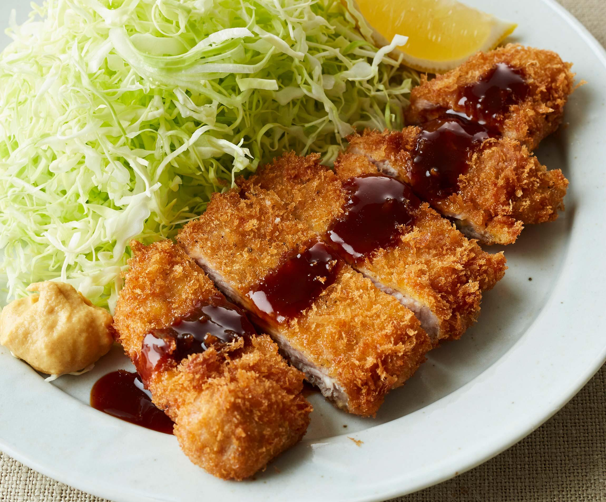

Home
Tonkatsu

Japanese Pork Chop
This Tonkatsu recipe uses thinly sliced boneless pork chops and panko,
which are Japanese bread crumbs that are really light and airy.
Ingrediants
- 2 large eggs
- 1 teaspoon milk
- ½ teaspoon minced garlic
- salt to taste
- ½ teaspoon pepper
- 1 ½ cups panko crumbs
- 8 thin cut boneless pork chops
- 1 cup vegetable oil for frying
Steps
- Combine eggs, milk, garlic, salt, and pepper in a medium bowl until well mixed.
Place panko crumbs in a shallow bowl.
- Dip 1 pork chop in egg mixture, then press into panko crumbs to coat evenly.
Dip in egg mixture again and coat with another layer of panko crumbs.
Lay coated pork chop on a plate and repeat with remaining chops.
If you have time, let coated chops sit for about 10 minutes so the coating will set well.
- Heat oil in a large heavy skillet over medium-high heat.
- Fry pork chops in hot oil until golden brown, about 5 minutes per side.